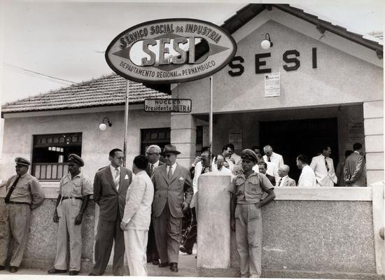

História da Escola Sesi Jaiara
O Serviço Social da Indústria de São Paulo (SESI-SP) tem uma das maiores redes de ensino particular, composta por 142 escolas, presentes em 112 municípios do Estado.

Oferece as modalidades: Educação Infantil, Ensino Fundamental, Ensino Médio, Educação Profissional Técnica de Nível Médio e Educação de Jovens e Adultos.
Origem do nome sesi jaiara
O CAT Branca de Lima Porto, Sesi Jaiara, em Anápolis, foi inaugurado em 18 de junho de 1972. A unidade recebeu o nome em homenagem e reconhecimento dos serviços prestados pelo então presidente da Fieg ao Sesi e à indústria goiana, foi escolhido o nome da mãe de José Aquino Porto para o Centro de Atividades. Branca de Lima Porto nasceu em Formiga-MG, em fevereiro de 1895 e faleceu em Goiânia aos 71 anos de idade. Estando seu filho, Aquino Porto, com apenas quatro anos, ela se tornou costureira e, nessa atividade, ajudou manter e educar os filhos.
Historia da rede Sesi
O Serviço Social da Indústria (SESI) é uma instituição brasileira que faz parte do Sistema S, um conjunto de entidades voltadas para o desenvolvimento e aprimoramento da indústria e do trabalhador. O SESI foi criado em 1946 como uma iniciativa do setor industrial para melhorar a qualidade de vida dos trabalhadores e promover o desenvolvimento social e cultural no Brasil.
A história do SESI remonta às primeiras décadas do século 20, quando o empresariado industrial começou a reconhecer a importância de investir no bem-estar e na formação de seus empregados. No entanto, foi somente após a Segunda Guerra Mundial que o SESI se consolidou como uma instituição de âmbito nacional, com a promulgação do Decreto-Lei nº 9.403, de 25 de junho de 1946.

O SESI oferece uma ampla gama de serviços, incluindo educação, saúde, cultura, esporte e lazer, com o objetivo de promover o desenvolvimento integral dos trabalhadores e suas famílias. A instituição também desempenha um papel importante na formação de mão de obra qualificada e na promoção de boas práticas de segurança e saúde no ambiente de trabalho. A rede SESI possui unidades em todo o Brasil, atendendo a milhões de trabalhadores e suas famílias, contribuindo para o desenvolvimento econômico e social do país. A história do SESI reflete o compromisso da indústria brasileira com o bem-estar e o desenvolvimento de sua força de trabalho.
Então é isso! Espero que você tenha gostado do nosso artigo com essa curiosidade sobre o sistema Android e seu simpático mascote.